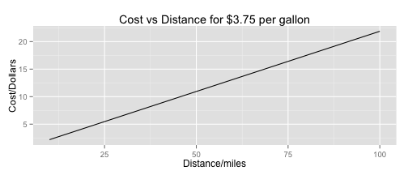

Fuel Consumption Predictor
How much for my classic car grace a rally?
Do you own a Pontiac Firebird, Porsche 914-2 or other classic car?
Or another classic from the 70s, but no reliable MPG figures?
No Problem!
My app uses a regression fit on measured MPG figures from the 70s
Just enter horsepower and transmission type and the app does the rest
Get MPG value and a graph of cost against distance
The app in action
Results are for a car with 250 HP and manual transmission
## [1] "Predicted MPG is 17.14"

The science
The model was fitted by a super duper advanced degree holder doing super complicated math
Use
two
whole predictors: horespower and type of transmission
This was based off work done in the regression models class
Lots of variables in the data set are highly correlated
It stands to reason for example that the displacement of the engine, number of cylinders, horsepower and quarter mile times are all closely linked
Profitability Strategy for app
App does something useful!
Certainly more info than a single 'Yo'
Key seems to be "Make it Social"
Further work, or as they say in the 'valley' Possible Pivots
It would also be useful to use the data set to predict quarter mile times using horsepower and weight as predictors
As always, with all statistics the solution is almost always Get More Data